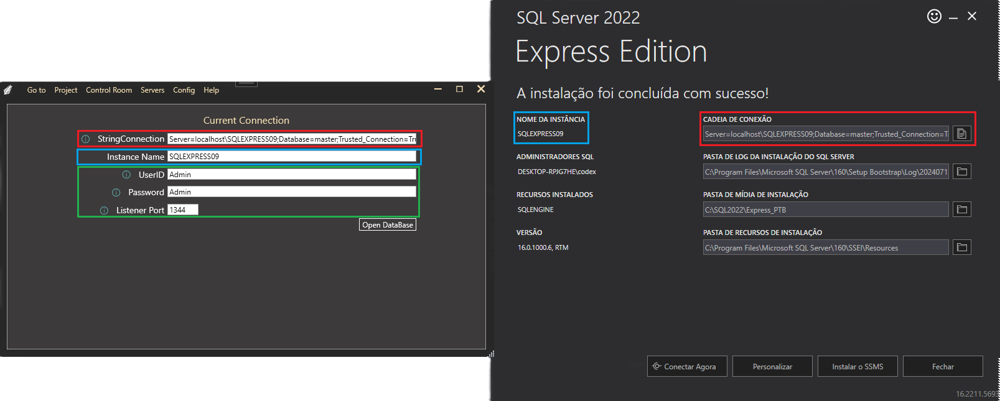

How to Install Microsoft SQL Server
Here is a step-by-step process on how to install SQL:
Step 1) Press on install SQL Server

Below screen will appear with three options: Basic, Custom and Download files.

Here is a step-by-step process on how to install SQL:
Below screen will appear with three options: Basic, Custom and Download files.


Below ‘SQL server install location’ window will appear, which is a crucial step in the Microsoft SQL Server install process.

Below ‘Downloading install package’ progress screen will be displayed. Wait until the SQL software download is complete.

Once the download is complete, the system will initiate installing the developer edition.

Below screen shows installation progress.

Once installation is completed successfully, below screen will appear.

This setup is self-sufficient for proceeding further with learning SQL server, and we can ‘Close’ this window.
So you need to copy and paste the information in red and blue.
The information in green you can be creative and insert.
